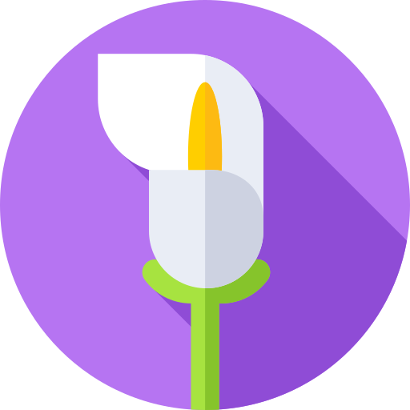
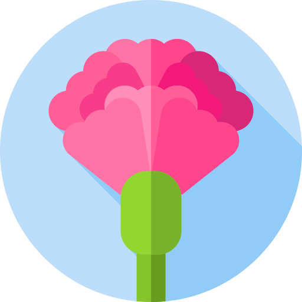
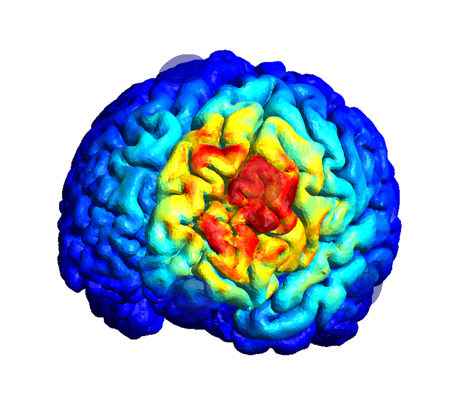

Neuroeconomics · Reward Processing · Decision Making
Current Work
My dissertation, funded by an NIH F31 fellowship from the National Institute on Aging, investigates how cognitive flexibility declines with age — and whether noninvasive brain stimulation can help restore it.
The core paradigm is reversal learning: participants learn which of two options is more rewarding, then the contingencies flip and they must adapt. This deceptively simple task engages prefrontal-striatal circuits critical for flexible decision-making — circuits that show pronounced age-related decline.
Below, I walk through the behavioral and computational methods used to quantify learning and flexibility, along with the brain stimulation approach we're testing. These interactive explainers are designed to make the methods accessible without requiring prior expertise.
The Task
In the two-armed bandit task, you repeatedly choose between two options — here represented as flowers. One flower is "better" — it rewards you 75% of the time, while the other only rewards 25% of the time. Your job is to figure out which is which.
The twist: partway through, the contingencies reverse. The previously good flower becomes bad, and vice versa. Detecting this shift and adapting quickly is the hallmark of cognitive flexibility — and it's exactly what declines with age.
Try it yourself below. You'll play 30 trials with one reversal midway through.


Measuring Behavior: Win-Stay, Lose-Shift
One simple but powerful way to characterize learning is to ask: How does someone respond to feedback? The Win-Stay, Lose-Shift (WSLS) framework breaks this down into two probabilities:
p(stay | win) — After a rewarded choice, how often does the person pick the same flower again?
p(shift | lose) — After an unrewarded choice, how often do they switch to the other flower?
Higher values indicate more feedback-driven behavior. Someone with high p(stay|win) exploits what works; someone with high p(shift|lose) quickly abandons what doesn't. Use the demo below to see how these metrics are calculated from a trial sequence.
Computational Modeling: Rescorla-Wagner
WSLS captures the immediate response to feedback, but it doesn't tell us how people integrate information over time. For that, we fit reinforcement learning models to the trial-by-trial choice data.
The Rescorla-Wagner model tracks an internal estimate of each option's value (Q), updating it after every outcome. Two parameters control learning:
α (learning rate) — How much weight is given to the most recent outcome? High α means fast learning but high volatility; low α means slow, stable learning.
β (inverse temperature) — How deterministically does the person exploit learned values? High β means choices closely track value estimates; low β means more random exploration.
Q(t+1) = Q(t) + α × (reward − Q(t))Choice rule:
p(A) = exp(β × Q_A) / [exp(β × Q_A) + exp(β × Q_B)]
Brain Stimulation: tACS
Transcranial alternating current stimulation (tACS) delivers weak oscillating electrical currents through scalp electrodes, modulating neural oscillations in targeted regions. We apply theta-frequency (6 Hz) stimulation over left dorsolateral prefrontal cortex (DLPFC) — a region critical for cognitive control and flexibility.
The logic: if age-related reversal learning deficits stem from weakened prefrontal function, then boosting prefrontal oscillations during the task might improve performance.
Below is our HD-tACS montage. The central electrode (F3) delivers the stimulating current, surrounded by return electrodes that shape the current flow toward left DLPFC. Additional electrodes record EEG during stimulation.
Individual Differences in Neuroanatomy
A critical question in brain stimulation research is whether the same montage actually delivers the same dose to every brain. Using SimNIBS, we modeled the electric field (E-field) produced by our HD-tACS montage on each participant's individual anatomy, derived from their T1-weighted MRI.
The spatial pattern is consistent: peak field intensity concentrates over left prefrontal cortex under the F3 electrode, falling off concentrically toward the surround returns. But the magnitude varies substantially — mean E-field intensity ranges from 0.148 to 0.371 V/m across participants, a 2.5:1 ratio despite identical stimulation parameters. That variability is driven by individual anatomy: skull thickness, CSF layer depth, and cortical folding patterns all shape how much current reaches the brain.
This matters in two ways. First, it validates the montage — every participant shows the field concentrated over left DLPFC, confirming that stimulation hits the intended target regardless of anatomy. Second, it provides an individual dose variable: if tACS effects on reversal learning are real but variable, E-field intensity may explain some of that variability — a mechanistic dose-response test that goes beyond group-level effects.

Curious how factors like age, reward sensitivity, and cognitive flexibility influence these parameters — and whether tACS can shift them? Our preregistered hypotheses and analysis plan are publicly available.
View Preregistration on OSF →